Sombronces
Sombronces est une planète particulièrement étrange, entièrement plongée dans une épaisse brume sombre. Contrairement aux autres astres du système, sa surface est presque impossible à distinguer depuis l'extérieur.
La planète est constituée d'immenses masses végétales qui s'étendent dans toutes les directions. De gigantesques vrilles traversent la brume et forment un réseau de végétation extrêmement dense.
À l'intérieur de Sombronces, l'espace semble se comporter de manière inhabituelle. De gigantesques zones végétales sont séparées par d'immenses étendues de brouillard, donnant l'impression que la planète est beaucoup plus vaste qu'elle ne devrait l'être.
La visibilité y est extrêmement faible. La brume masque presque entièrement ce qui se trouve autour de soi et rend difficile l'orientation entre les différentes zones de la planète.
Sombronces abrite également une faune particulièrement dangereuse : les cœlacanthes. Ces créatures gigantesques vivent dans les profondeurs de la brume et peuvent surgir sans prévenir lorsque l'on s'approche trop près d'elles. Leur présence rend l'exploration de certaines régions particulièrement risquée.
Certaines parties de Sombronces sont également constituées de graines et de pousses végétales gigantesques. Lorsqu'elles sont traversées, elles permettent d'accéder à des régions qui semblent beaucoup plus éloignées que leur taille réelle ne le laisserait penser.
Sombronces est donc un environnement sombre et difficile à comprendre. Sa végétation gigantesque, son épaisse brume, son étrange organisation spatiale et les créatures qui y vivent en font l'un des mondes les plus inhabituels du système solaire.